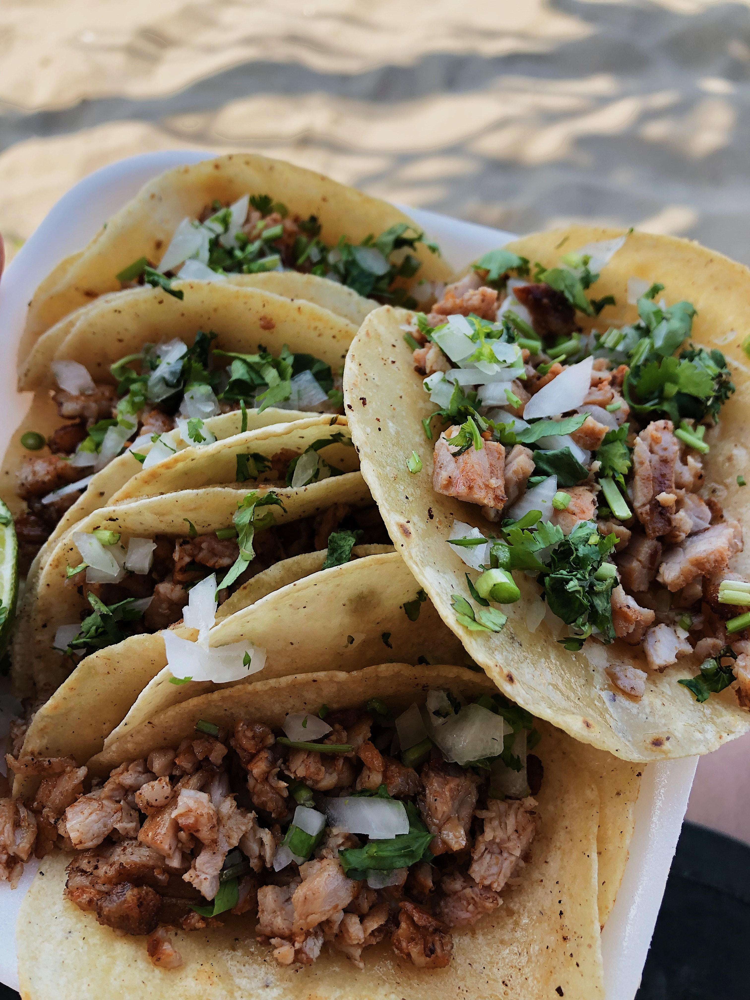

Carne Asada Tacos

The best taco recpies...
These tacos are something to die for. The simplicity of tacos is something amazing, juciy carne asada w/ delicious cilantro and white onion topped with your facvorite salsa and cotija, there are so many ways to make them it is truly undeniable that tacos are a main staple in my life.
If you would like a look at authentic taco recpies, you can look here.
Ingredients
- Cilantro
- 1 pound Carne Asada
- 1 Onion
- 5 Limes
- Salsa
Steps
- Place oil in skillet on medium heat, leave until heated.
- Cut carne asada into small bite-sized pieces and throw into skillet, stirring frequently until golden brown.
- Prep Cilantro & Onion, cut very small (or however you'd like). Personally it's better the smaller it is.
- Heat tortillas of choice flour or corn and fill with carne top with cilantro and onions and don't forget the salsa.
- Enjoy!